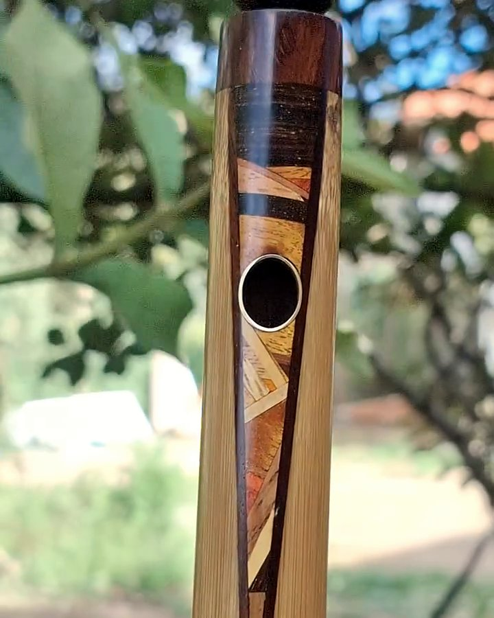
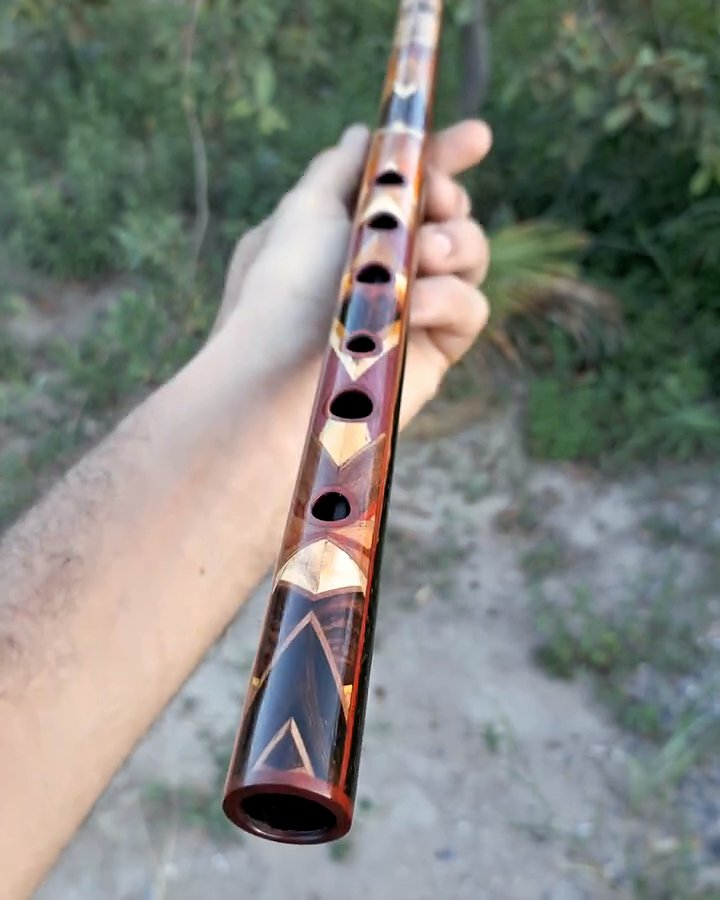
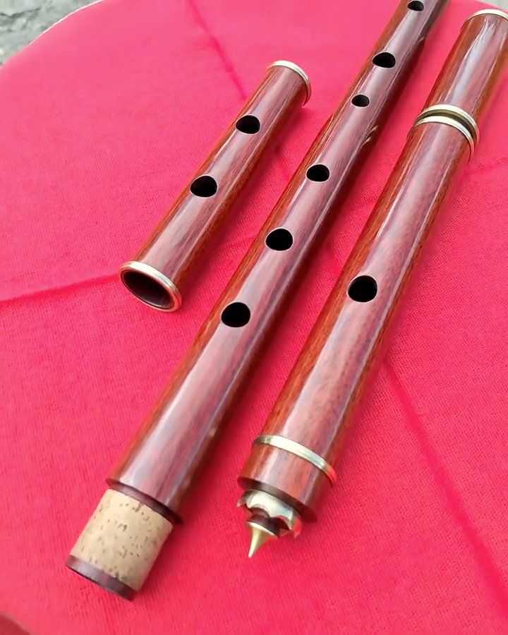

Igor Bastos
Faço pífanos, flautas transversais de madeira, flautas irlandesas e flautas nativas no meu ateliê, no Vale do Capão. Toco e afino cada uma antes de ela sair daqui.
O que eu faço
Tudo por encomenda, no tom, na madeira e com os detalhes que você escolher.
Na bancada
Três coisas que fazem diferença no som e que eu não deixo de fazer.
- Diâmetro interno certo para cada tom
No Sol, uns 17,5 mm; no Dó, 14 mm. No bambu, escolho a vara pelo diâmetro interno e pela espessura de parede, e é ela que define o tom da flauta.
- Cabeça cônica nas flautas de madeira
Por dentro, o tubo afunila em direção ao bocal, como nas flautas Boehm. Faço isso com alargadores que eu mesmo fabrico, um para cada tom.
- Afinação furo a furo
Não basta a primeira oitava bater. Ajusto cada furo para a 2ª e a 3ª oitava saírem afinadas, e a coroa com stopper móvel deixa você fazer o ajuste fino.
Ouça
Trechos curtos de flautas que saíram do ateliê. Toque para ouvir.




Quem recebeu
“Recebi aqui... Sonzão, viu? Pífano maravilhoso.”
Tati
“Recebi hoje, tava tudo perfeito, até a embalagem.”
Osorio
“A flauta é muito bonita e o som não fica atrás!”
Erivan
Como encomendar
Você me conta o modelo e o tom, eu passo o valor completo com o frete. Pix de 50% para começar e o restante antes do envio. Flauta de madeira em 1 ou 2 partes leva 2 meses; em 3 ou 4 partes, 3 meses.